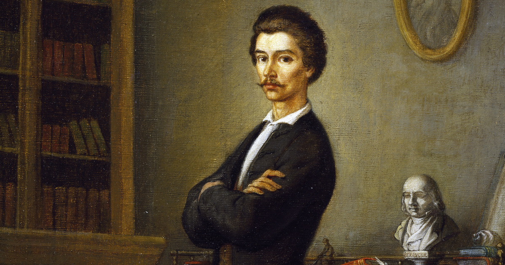
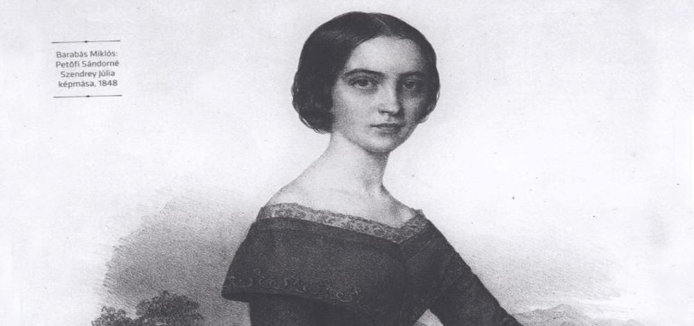
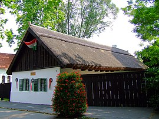
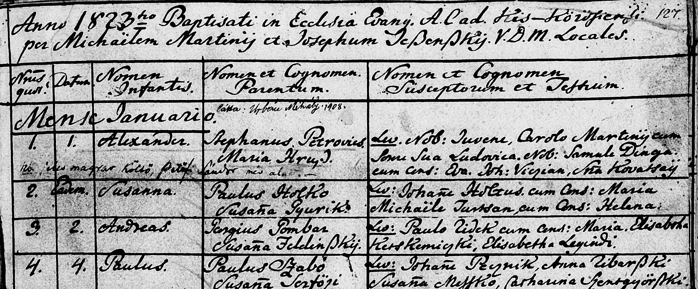
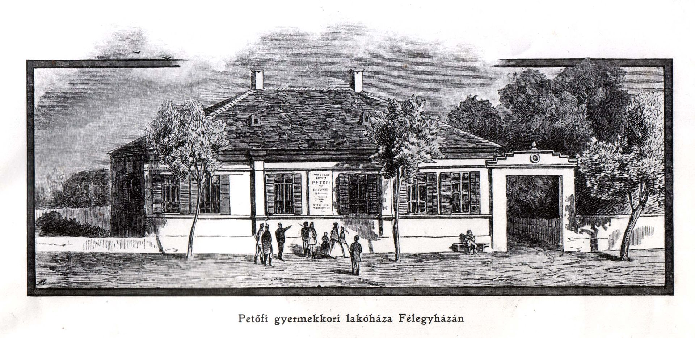
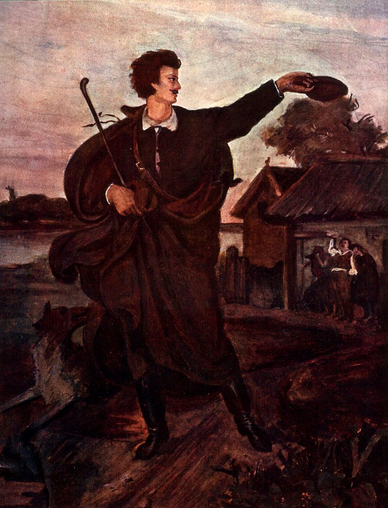

Édesapja Petrovics István (Kartal, 1791. augusztus 15. – Pest, 1849. március 21.) mészárosmester, felvidéki szlovák családból származott (a közhiedelemben elterjedt szerb származással szemben), de ő magyarnak vallotta magát. Apjának szlovák származását valószínűsíti annak evangélikus vallása (a szerbek általában ortodoxok), illetve Kiss József és Jakus Lajos kutatásai, akik apai ágon 1685-ig, a Nyitra vármegyei Vagyócig vezették vissza Petőfi származását. Vagyis a Petrovicsok csakúgy Felvidékről származnak, mint az anyai ág, amely a Turóc vármegyei Necpál községből ered. Apai nagyapja Petrovics Tamás, aki 1770-ben 26 évesen költözött el Aszódra.
Anyai nagyapja, Hrúz Mihály, tehetős redemptus, aki Kecskemét város tekintélyes polgára volt. Édesanyja, Hrúz Mária (Necpál, 1791. augusztus 26. – Pest, 1849. május 17.) férjhezmenetele előtt mosónőként és cselédként dolgozott a maglódi evangélikus lelkésznél, Martiny Mihálynál. Szlovák anyanyelvű volt, a magyar nyelv használatára csak asszonykorában tért át. Arany János emlékezete szerint „nem mindig ejtette tisztán a magyar szót, de folyvást beszélte”.
Petrovics István és Hrúz Mária valószínűleg Maglódon ismerkedett meg, és 1818. szeptember 15-én Aszódon kötöttek házasságot. Mikulás Dániel evangélikus lelkész eskette őket, és feleségével mindketten az evangélikus vallást gyakorolták. Petrovics ekkor szabadszállási kocsma- és mészárszékbérlő volt, majd 1821-ben Kiskőrösre költöztek. 1822–24-re a családfő kibérelte a kiskőrösi mészárszéket, és ott lakott feleségével együtt, így született ott meg első gyermekük, Sándor.


Petőfi születési helyének és időpontjának kérdése
1857-ben alakult ki először vita Petőfi szülőhelyével kapcsolatban, addig Szabadszállást fogadták el, Ferenczy-Danielik 1856-os Magyar írók életrajz-gyűjteményében is ez szerepel. Kiskőrös csak ekkor merült fel először. Később szóba került Félegyháza, Kunszentmiklós és Dunavecse is. A kortársak is különbözőképpen jelölik meg a költő születési helyét. Ferenczi Zoltán szerint Félegyházán született, Gyulai Pál 1854-ben szintén úgy nyilatkozott, hogy Petőfi Félegyházán látta meg a napvilágot. Jókai Mór, a költő barátja hol Szabadszállást, hol Kiskőröst emlegette. Petőfi színésztársa, Szuper Károly tudomása szerint félegyházi születésű volt a költő. Barátai és tanulótársai Szabadszállást és Félegyházát emlegették. Arany János tudomása szerint Petőfit csak keresztelték Kiskőrösön, de nem ott született. Petőfi István 1867-ben nem zárta ki, hogy bátyja akár Félegyházán is születhetett. Várady Antal 1872-ben úgy emlékezett vissza, hogy Petőfi többször is említette neki, hogy Kiskőrösön született, hozzátéve, hogy a költő „Soha még tréfából sem hazudott születéshelyéül folyvást Kis-kőröst állította”. Gyulai Pál szerint Kiskőrös mellett szóltak azon okmányok, melyek azt bizonyították, hogy Petrovics István a helyi mészárszéket bérelte, a szülők pedig 1821 és 1824 között ott laktak. Ennek ellentmond, hogy az 1823-as összeíráskor Petrovics Istvánt Szabadszálláson vették lajstromba. 1922-ben Katona Géza nyugalmazott pécsi tanügyi főtanácsos Hol született Petőfi? című cikkében Szabadszállás mellett állt ki. Az irodalomtörténet Kiskőröst fogadta el Petőfi születési helyeként. Kiskőrös mellett szól az a feltételezés is, hogy nem szerencsés 45 km-t megtenni a havas rónán egy újszülöttel, ezért a szülők a szülést megelőző pár napban már Kiskőrösre mehettek át. Petőfi maga különböző helyeket jelölt meg a saját maga által kitöltött okmányokban, így a selmeci líceumba való beiratkozásnál Kiskőröst vallotta szülőhelyének, míg a selmecbányai Magyar Társaság könyvébe szabadszállásiként írta be magát. Amikor 1839 szeptemberében Sopronban jelentkezett katonának, öregítette magát, 1821-es születési évet diktált be, hogy felvegyék, születési helyeként pedig Kiskőrös szerepel. A szabadszállási születést erősítik meg a költő rokonai is, köztük Baky Józsefné Herpai Zsuzsanna (1852–1947), és az ő testvére, Herpai János (1856–1942), akiknek Petőfi unokabátyjuk volt. Szüleik és nagyszüleik azt mondták nekik, hogy Petőfi Szabadszálláson született az Izsáki úton. Herpai János elmondta, hogy csak később jelölték meg Kiskőröst szülőhelyként. A rokonok felmenőinek visszaemlékezései alapján Petőfit csak keresztelni vitték Szabadszállásról Kiskőrösre. Berta Sándorné bábaasszony maradt Petrovicsnéval otthon és Höss Józsefné bábaasszony vitte magával a gyermeket, Pandur József későbbi főbíró hajtotta a lovakat. A költő dajkája Pőcze Györgyné volt. Némelyek úgy emlékeznek, hogy a kisdedet gyenge fizikuma miatt kellett sürgősen megkeresztelni, míg más beszámolók szerint a vallási viszályok miatt a református pap nem volt hajlandó evangélikus gyereket keresztelni. A harmadik magyarázat szerint azért vitték Kiskőrösre Martiny Mihályhoz, mert Petrovicsné korábban nála szolgált Maglódon. 1857-ben Petőfi István levelet küldött Brünnből, melyben az alábbiakat írta: "Sárkány János úrnak tökéletes igaza van, minthogy a keresztelési anyakönyv nem hibázhatik. Sándor Kiskőrösön született 1822. év december 31-én, pontosan éjféli 12 órakor." Az a feltételezés, hogy a keresztszülők meghívásához is időre volt szükség, szintén arra utal, hogy a költő 1822 decemberének végén születhetett. Kiss Béla tanító 1935-ben száztíz éves okiratok között talált egy Kiskörös tanácsa által 1823. január 5-én Mihalik György mészároslegény számára kiállított papírt, aki segédként dolgozott ekkor Petrovics Istvánnál. Arra is rábukkant, hogy Kiskörös 1824. évi kiadási könyvében az szerepel, hogy a három évre szóló székbérletet Petrovics 1822-től 1824-ig bírta. Kiss szerint ezzel bizonyítást nyert, hogy a költő születésének idején Kiskőrösön lakott a család.

Petőfi szülőháza Kiskőrösön (2007)

Az újszülött Alexander Petrovics keresztelési bejegyzése a Kiskőrösi Evangélikus Egyházközség keresztelési anyakönyvében (IV. kötet /1814–1838/, 127. oldal)
Tanulóévei
Petőfi eleven, elmés, kissé makacs, de jószívű gyermek volt. Kemény apja szigorúsággal, anyja gyöngédségével vezette. Édesapja lehetőségeihez mérten megpróbálta a legjobb iskoláztatást biztosítani gyermekeinek. Az ifjú Petőfi összesen kilenc iskolában tanult, már ötévesen koptatta az iskolapadot. Félegyházán ment először iskolába, de csak vendégként járt be a római katolikus elemibe egy ideig 1828 elején. Már ezt megelőzően oktatták olvasásra és rajzra, a rajzhoz később is kedvet mutatott. Ezután három évig Kecskeméten tanult: először 1828. május 10-én vitte apja az evangélikus népiskolába, ott íratta be 1829. május 10-én a második, illetve 1830. május 15-én a harmadik elemibe is. Az intézményben már némi latint is tanult. Szállása Habel Józsefnél volt, aki akkor az öreg Petrovics félegyházi és kecskeméti mészárszékének haszonbérlőtársa volt. Vakációzni haza, vagy kiskőrösi rokonaihoz járt.
1830-ban szülei Félegyházáról hat évi ott lakás után Szabadszállásra költöztek vissza, ahol félegyházi keresetükből meglehetősen szép vagyont, házat és földet szereztek. A harmadik iskolai évet nem is fejezte be Petőfi Kecskeméten, apja 1831 elején hazavitte Szabadszállásra, ahol akkor Ujlaky István református rektor algimnáziumra készítette fel a fiúkat.
1831. szeptember 28-án apja a dunántúli Sárszentlőrincre küldte fiát az evangélikus algimnáziumba, ott két évet töltött mint donatista tanuló. Tanára, Lehr András főleg a latin nyelvet és szépírást tanította nagy kedvvel, és Petőfi mindkettőben kitűnt. Szerette ezt az iskolát, és boldog gyermekkora volt: szülei gondosan ellátták, szállása a község legjobb családjainál volt, és bár már ekkor szeretett érzelmeibe merülni, szívesen részt vett diáktársainak, főleg a kissé nagyobbaknak játékaiban is. Ekkor barátkozott össze Sass Istvánnal is. A második évben Németh Ferenc néptanítónál lakott. Ezekben az években szerzett a környéken barátokat, így később többször is visszatért ide és a szomszédos Borjádra.
1833-ban a német nyelv tanulása céljából Pestre vitte apja Stark János Síp utcában lakó cipészmesterhez, és augusztus 27-én beíratta a Széna téri (ma Deák Ferenc tér) evangélikus német gimnáziumba, ahol a II. donatista osztályba járt az 1833–34-es tanévben. Egy Petrovics nevű lovashajdú rokonánál lakott. Ekkor már nem volt olyan jó tanuló. Apja emiatt 1834-ben a piaristákhoz vitte, ahol az I. grammatikai osztályban a többnyire német tanulók közt leginkább a magyar nyelvben volt jó, illetve osztálytársai közül ő írt és rajzolt a legszebben. Itt sem tanult jobban, és az első osztályt 1835 nyarán csak elsőrendű bizonyítvánnyal végezte. Érdeklődése már ekkor a színészet felé fordult, ezenkívül osztályában túlságosan sokan voltak. Pesten sokat volt alkalma gyakorolni a német nyelvet. A szünidő nagy részét keresztapja, Martiny Károly ügyvéd házánál töltötte Kiskőrösön.
Apja már azon gondolkodott, hogy kiveszi az iskolából, de 1835-ben újra beadta felekezetének aszódi algimnáziumába, a II. grammatikai osztályba. A kisvárosban, a kevésbé népes osztályban Petőfi megint kitűnt rendes magaviseletével és szorgalmával, ami a 2. és 3. évben még jobban fokozódott. Mint szintaxista már nagy kedvvel gyakorolta a latin versformákat. Kedélyélete fejlett, költői ambíciói ébredeztek; szívesen olvasta a kis könyvtár költői és történeti műveit, elsősorban Horatius ódáit szerette. Amikor azonban Aszódon színtársulat járt, színésznek akart felcsapni. Emiatt apja, akit Petőfi tanára, Koren István sietett értesíteni, alaposan megverte fiát. Szállása Neumannénál volt, a két utolsó évben öccsével együtt.
Itt lobbant fel első szerelme Cancriny Emilia iránt, akihez szerelmes verset írt. Itt barátkozott össze Neumann Károllyal, Dömök Elekkel és Esztergályi Mihállyal. Részt vett egy pár ártatlan diákcsínyben is. 1837 karácsonyára három iskolatársával Pencre ment, ahol nagynénjét, Hrúz Annát látogatta meg, aki Kosztolányi ügyvédnél volt házvezetőnő.
Petőfi mint első eminens tanuló hagyta el 1838. június 30-án az aszódi algimnáziumot. Jól beszélt németül és latinul; különösen kitűnt a magyar fogalmazásban, és az év végi búcsúvers elkészítését, melyet máskor Koren tanár írt, ezúttal őrá bízták. Az 54 hexameterből álló vers fennmaradt és ez Petőfinek legrégebbi ismert költeménye, címe: Búcsúzás 1838-ik évben.
Gyermekkorának színtere Kiskunfélegyházán
Aszódi éveiről az Úti jegyzetekben így emlékezett meg:
„Aszód! Csak egyszer kellene ezt a szót tőlem hallnod, s azonnal kitalálnád, hogy én itt három esztendőig tanultam… akarom mondani: jártam iskolába. S mily eseménydús három esztendő! 1. Itt kezdtem verseket csinálni. 2. Itt voltam először szerelmes. 3. Itt akartam először szinésszé lenni. A verselés a szerelem eredménye volt. A szinésszé lenni akarásnak pedig nem annyira eredete, mint következménye nevezetes. Nevezetes és szomorú.”
Az 1845-ben írt Úti jegyzetekben említett első szerelme a tizenöt éves Cancrinyi Emília volt, egy özvegy evangélikus lelkész leánya, aki Aszódon diáktársa volt. Emília kisasszony nagyjából egyidős volt a költővel, és idős korában kellemetlenül érintette, hogy az emlékezetében nyilvánvalóan megkopott aszódi diák körül olyan nagy felhajtást csaptak a korabeli újságok, nem szívesen beszélt Petőfiről. A verseket ugyan nem szerette, de Petőfi hozzá írt névnapi köszöntőjét megőrizte, bár egyáltalán nem tartotta becsben, mert végül elkallódott. Sírja a tápiószelei temetőben van.
Ezzel azonban a boldog gyermekkor véget is ért, és a serdülő Petőfire a hányattatás és szenvedés súlyos évei vártak. Apját, aki az 1830-as években Szabadszálláson is évről évre vagyonosodott, 1838-tól kezdve egymásután súlyos csapások érték; az 1838. évi árvíz elöntötte földjét és elvitte házát, egy megbízottja hűtlenül kezelte egyik bérletét, sőt peres úton megkárosította, és birtokai egy részét 1839-ben elárverezték. Egy rokona, akinek kölcsönt adott és akiért jótállott, megbukott, Petrovicsot is magával rántotta, emiatt 1840-ben már úgyszólván semmije sem maradt. A sok csapás még inkább ingerültté tette a különben is szigorú apát, aki fiának legcsekélyebb tévedését sem tudta elnézni. Hozzájárult ehhez az is, hogy évről évre mind kevesebbet tudott érte áldozni. A fiúra nézve pedig ezek az évek rendes körülmények közt is válságosak lettek volna, mert szellemi tehetsége kezdett kinőni az iskolai szűk keretekből.
Petőfi 1838. augusztus 31-étől a Selmecbányai Líceumba járt, ahol az 5. osztályba, első éves rétornak iratkozott be. Már itt érdeklődni kezdett a korabeli nemzeti és irodalmi küzdelmek iránt, és a vegyes nemzetiségű ifjúság közt, melyben – ahogy a tanárok közt is – pánszláv törekvések is megnyilvánultak, ő magyarnak vallotta magát és lelkesen csatlakozott az ifjúság kebelében fennállt Nemes Magyar Társaság nevű önképzőkörhöz. E társaságban – amelybe első éves rétor létére nem kezdő, hanem rendes tagként vették fel – elemében érezte magát, versekkel és bírálatokkal többször fellépett. Itt szavalta október 31-én a Csákot, november 7-én A hűtelenhez című költeményét (a vers kézirata a selmecbányai ev. líceum érdemkönyvében a költő első ismert kézirata; ma az Evangélikus Országos Múzeumban látható); 1839. február 16-án felolvasták A költő keserve című költeményét (az érdemkönyvből kitépve). Boleman István ekkor megjósolta, hogy ebből a fiúból még költő lesz. Tehetségét szította a pár évvel idősebb Szeberényi Lajos, a társaság elnöke, akivel Petőfi barátságot kötött. Boleman István és Daniel Gabriel Lichard voltak tanárai, előbbi költészettant, latin fordítást, stílusgyakorlatokat és földrajzot tanított, az utóbbi pedig hittanra, régiségtanra és magyar történelemre oktatta az ifjúságot latinul, mivel magyarul nem tudott. Ezenkívül a német nyelvet is gyakorolták.
Az iskolában azonban rohamosan hanyatlott, főleg egyes tárgyak tanulására adta magát és önművelésének élt. Szegénysége is nyomasztó volt rá nézve, az alumneumban ebédelt. Hogy eljárhasson a színházba, amelyért rajongott, néhány holmiját eladta. Ezért részeges házigazdája korhelységgel vádolta tanárai, később apja előtt. Ezért megharagudott gazdájára, és 1839 elején Szeberényi közelében, özvegy Fedáknénál bérelt lakást.
A félévi vizsgája rosszul sikerült, s egyik szláv érzelmű tanárától, Lichard Dánieltől magyar történelemből elégtelent kapott. Apja erre megírta neki, hogy mint érdemtelen fiúról leveszi róla kezét, mire Petőfi 1839. február 15-én elhagyta a selmeci líceumot.

Gyermekkorának színtere Kiskunfélegyházán
Tanulóévei
Az ifjú gyalog ment Prencsfaluba, és ott aludt, majd harmadnap a kocsmáros szekerén utazott tovább a legközelebbi állomásig. Innen Hontnémeti, Ipolyság, Vác érintésével érkezett Pestre, ahol március 3–4. körül a Kecskeméti-házban szállott meg. Itt apjával találkozott, de megszökött tőle, és Rónai álnév alatt a Nemzeti Színházhoz szegődött statisztának. Körülbelül két hónapot töltött a színháznál. Májusban egy rokona, Salkovics Péter mérnök vette magához Ostffyasszonyfára azzal a szándékkal, hogy majd a soproni líceumban fiával együtt taníttatja. Itt vakációzott vele Orlai Petrich Soma is, aki szintén rokona volt és mindvégig jó barátja maradt. Egy környékbeli földbirtokos leánya, a szép és gazdag Tóth Róza iránt itt táplált szerelmi ábrándjai még pár év múlva is felhangoztak költeményeiben. Orlai így írja le az akkor látott Petőfit: „középmagasságu, szikár, fahéjszin arczu, sörte kemény barna hajú ifjú, villogó fekete szeme fehérét vércsikok futották át, daczos kifejezésű duzzadt ajkai fölött a bajusz csak most serkedett, hosszú nyaka leeső vállai közül meztelenül nyúlt föl, s nadrágjával egyszinű szürke czérnakabát földte tagjait”. Mikor azonban eljött a szeptember, a mérnök mást gondolt, és azzal a kifogással, hogy úgysem lesz belőle komédiásnál egyéb, sorsára hagyta Petőfit.
Petőfi Sándor búcsúja a szülői háztól, Munkácsy Mihály festménye
A rokonságtól távozásra kényszerülve Petőfi szeptember 5-én Orlaival és a mérnök fiával Sopronba ment, de ő nem a líceumba tért be, hanem 1839. szeptember 6-án besoroztatta magát a Gollner-féle 48. számú gyalogezredbe, hogy senkinek se legyen terhére. Nem dicsőségvágyból tette, hanem dacból és szükségből. A 16 éves „zöldhajtókás, sárga pitykés közlegény” panasz nélkül végezte terhes szolgálatát, és össze-összejött diák barátaival is. Katonáskodása idején ismerkedett meg Pákh Alberttel. Használta az iskola könyvtárát és részt vett néha a magyar társaság ülésein, legfőbb vigasztalását pedig a verselésben találta, de életének soproni szakaszából nem ismerjük versét. Nyomorúságai közt és a durva környezetben jövő hivatásának gondolata tartotta fel lelki erejét. 1840 tavaszáig maradt Sopronban, akkor századja március közepén Bregenzbe indult, nem kis örömére Petőfinek, aki alig várta, hogy Tirolt és még inkább Olaszországot megláthassa. Grazig mentek, ott megtudták, hogy az ezredet Horvátországba helyezték át, és Petőfi százada is ott fog állomásozni. E csalódás lehangolta, de még nagyobb baj volt, hogy a szolgálat elcsigázta szervezetét. Grazban két hónapig idegláz gyötörte, az 1840 őszi nagygyakorlatok alatt vért köpött, emiatt Károlyvárosban hónapokon át a kórházban ápolták. Ezután Zágrábban tífuszt kapott, és szeptemberben újra kórházba került. Eredménytelenül gyógyították, a kórházat 1841. január 20-án hagyta el. A sivár élet, az idegen környezet, szülei szegénységének, apja neheztelésének, a maga betegségének és szenvedéseinek elgondolása, a jövőre minden kilátás elborulása lelkileg is beteggé tette, szenvedéseit csak Kuppis Vilmos közlegény pajtásának barátsága enyhítette, akire később is mindig szeretettel gondolt vissza. Az emberséges ezredorvos, Römer doktor, aki részvétet érzett az intelligens ifjú iránt, magától kezdeményezte és kieszközölte elbocsátását. Petőfit így egészségügyi alkalmatlanságra hivatkozva 1841. január 31-én leszerelték. A január 15-én lefolytatott kórházi vizsgálat után tett jelentés alapján február 23-án a katonai szolgálat alól felmentették és mint rokkantat többedmagával Sopronba vitték, ahol 28-án obsittal végleg elbocsátották.
Miután kedélye barátai körében kissé felpezsdült, egy hét múlva Pápára indult Orlaihoz, aki akkor már ott tanult. Itt barátai felruházták, keresetet szereztek neki, sőt, Tarczy Lajos tanár pártfogásával a tanárok felvették a VII. osztályba benevolus auditornak is, noha nem volt bizonyítványa és az iskolai év vége felé járt. Csak három hétig maradt Pápán. Itt is nélkülözött, a tanulásba lassan szokott bele, és amikor egy ízben obsitos katonaruhájában jelent meg az előadáson, a tanulók nagy kacagásban törtek ki, és a tanár kiutasította. Pozsonyba vándorolt, ahol Szeberényi és több régi tanulótársa tanult, de itt nem lelt módot a megélhetésre, emiatt tovább vándorolt színésztársaságot keresni. Előbb Győrbe gyalogolt, de mivel ott nem volt társulat, Pestre utazott hajón, majd ismét gyalog Dunavecsére látogatott el szüleihez, akik a falu kocsmáját bérelték, és nagyon szegényen éltek. Apja azt kívánta, hogy mészáros legyen, anyja a továbbtanulást sürgette, maga pedig a színészpályára vágyott és meg akart gazdagodni, hogy szüleit segíthesse. Mivel azonban nem sikerült eloszlatni apja előítéleteit, anyja kívánsága győzött, és 1841 áprilisában Selmecre gyalogolt bizonyítványáért. Pár hónapig még otthon maradt, és verseket írt, de mivel az iskolai év kezdete még messze volt, próbát akart tenni időközben a színészettel.

Petőfi Sándor búcsúja a szülői háztól, Munkácsy Mihály festménye